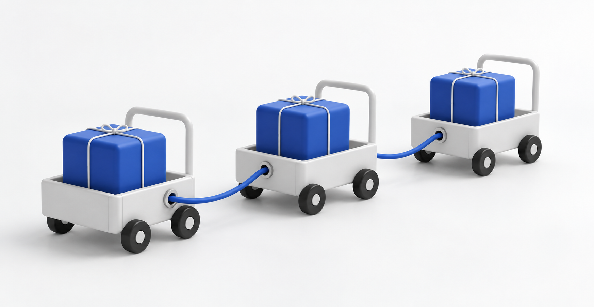
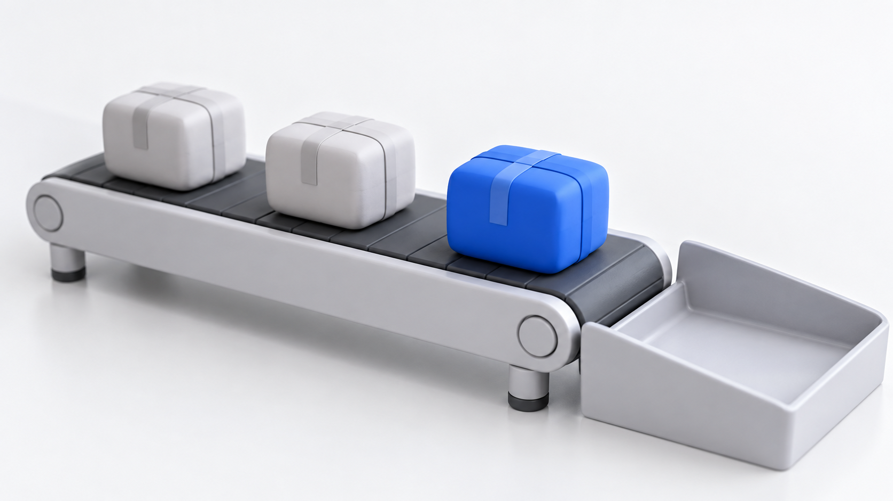
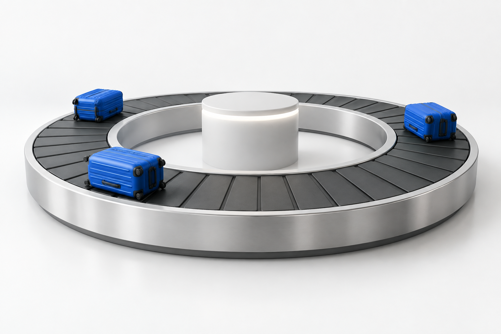
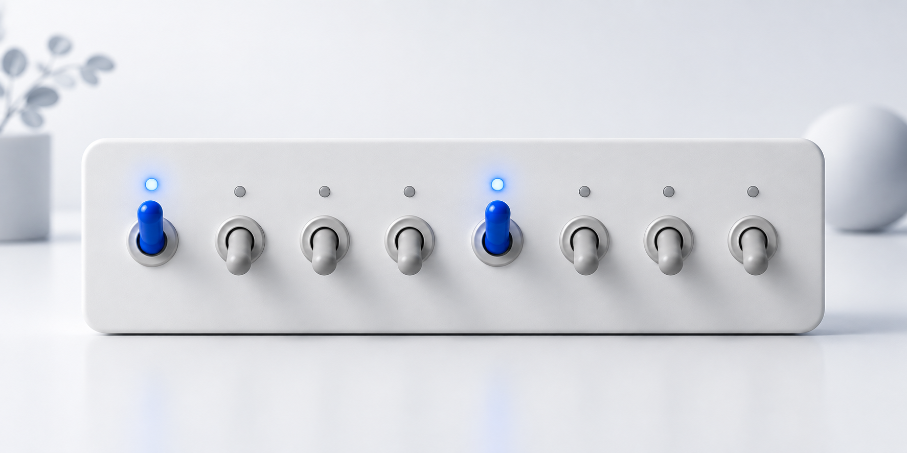

용량 capacity
unsigned char buf[1024]는 1,024바이트를 담을 공간입니다. 공간이 있다고 해서 1,024바이트의 유효 데이터가 들어 있다는 뜻은 아닙니다.
배열에서 시작해 버퍼의 수명까지.
TCP 소켓 코드를 읽고 쓰기 위한 C 기초 10가지를 연결합니다.
각 주제는 쉬운 개념 → 단계별 도식 → 세부 설명과 코드 순서로 읽습니다.
같은 크기의 칸이 다섯 개 있는 수납함을 떠올려 보세요. 물건을 세 개 넣어도 수납함 자체는 여전히 다섯 칸입니다. 배열도 정해진 수의 원소를 나란히 보관하며, 각 칸을 0부터 시작하는 번호인 인덱스로 찾습니다.
네트워크 버퍼에서는 “마련한 칸 수”와 “이번에 받은 데이터의 양”을 따로 기억합니다. 그림의 빈칸은 이번에 받은 데이터가 들어 있지 않은 구간입니다. 그곳의 메모리 값이 자동으로 0이 되었다는 뜻은 아닙니다.
1 공간을 먼저 준비합니다
5바이트를 담을 공간을 준비했습니다. 아직 데이터를 받지 않았으므로 읽을 수신 데이터는 없습니다.
2 3바이트를 받았습니다
recv()가 3을 반환했다고 가정합니다. 0~2번 칸에 16진수 41, 00, 42가 있고, 나머지 두 칸은 이번 수신 내용이 아닙니다.
3 읽을 구간을 길이로 정합니다
중간의 00도 정상 데이터입니다. 문자열의 끝으로 취급하지 않고, 세 바이트 모두 처리합니다.
배열의 시작 주소는 “어디에서 읽을지”, 유효 길이는 “얼마나 읽을지”를 정합니다. 위 도식에서는 첫 칸부터 3바이트를 읽었습니다. 이처럼 버퍼를 함수에 전달할 때도 주소와 길이가 함께 필요합니다. 아래에서는 더 큰 수신 버퍼와 IPv4 배열에 같은 원리를 적용합니다.
배열은 같은 타입의 원소를 연속해서 보관합니다. 소켓에서 “버퍼를 넘긴다”는 말은 보통 이 공간의 시작 주소와 사용할 바이트 수를 함께 전달한다는 뜻입니다.
unsigned char buf[1024]는 1,024바이트를 담을 공간입니다. 공간이 있다고 해서 1,024바이트의 유효 데이터가 들어 있다는 뜻은 아닙니다.
recv()가 37을 반환하면 이번에 채운 구간은 buf[0]부터 buf[36]까지입니다. 남은 공간은 이번 수신 내용에 포함되지 않습니다.
| 항목 | [0] | [1] | [2] | [3] |
|---|---|---|---|---|
| 값 | 192 / C0 | 168 / A8 | 0 / 00 | 1 / 01 |
| 주소 | 0x1000 | 0x1001 | 0x1002 | 0x1003 |
| 포인터 | ip | ip + 1 | ip + 2 | ip + 3 |
표의 주소가 연속된다는 것은 프로그램이 보는 주소 공간을 기준으로 한 설명입니다. 물리 RAM의 페이지 배치까지 연속이라는 뜻은 아닙니다.
배열 표현식은 많은 상황에서 첫 원소 포인터로 바뀌지만, 배열 자체와 포인터 변수는 다릅니다. 배열이 선언된 자리의 sizeof buf와 함수 인자로 받은 포인터의 sizeof를 구분하세요.
/* Ubuntu · C17 / main 함수 안의 개념 조각 */
unsigned char bytes[] = {0x41, 0x00, 0x42};
/* 문자열 끝이 아니라 유효 바이트 수로 순회한다. */
for (size_t i = 0; i < sizeof bytes; i++) {
printf("%02X ", (unsigned int)bytes[i]);
}TCP는 바이트 스트림입니다. 배열이 연속되어 있어도 한 번의 send()가 한 번의 recv()로 전달된다는 보장은 없습니다. recv() 반환값 문서와 1장의 TCP 수신 단위 설명을 연결해 읽으세요.
여행 파우치에는 카드, 케이블, 작은 소품처럼 종류가 다른 물건을 함께 넣습니다. 구조체도 상태, 길이, 주소처럼 서로 다른 역할의 값을 하나의 대상으로 묶습니다.
구조체를 구성하는 각 항목을 필드라고 합니다. 필드에 이름을 붙이면 “세 번째 칸” 대신 “메시지 길이”처럼 값의 의미를 드러낼 수 있습니다.
이 세트의 내용을 다른 사람에게 전달하려면 무엇을 어떤 순서로 보낼지 약속해야 합니다. 구조체의 값을 네트워크로 보낼 때도 마찬가지입니다. 프로그램 안에서 값을 묶는 방식과 전송할 바이트의 순서를 따로 정합니다.
1 프로그램 안에서는 이름으로 접근합니다
하나의 MessageHeader에 두 필드가 있습니다. flags는 상태 값, length는 본문 바이트 수를 나타냅니다.
2 보내는 순서를 약속합니다
학습용 규격은 상태 1바이트 뒤에 길이 2바이트를 둡니다. 길이는 상위 바이트부터 저장하므로 3을 16진수 00 03으로 표현합니다. 이 그림에서는 본문을 생략했습니다.
3 받은 바이트를 값으로 복원합니다
필드 이름은 네트워크로 전달되지 않습니다. 양쪽 프로그램이 같은 규격을 알아야 같은 의미로 해석합니다.
도식의 3바이트는 통신 규격으로 정한 길이입니다. sizeof(MessageHeader)가 반드시 3이라는 의미는 아닙니다. 아래에서는 컴파일러가 정렬을 맞추려고 필드 사이에 넣는 빈 공간인 패딩을 확인하고, 전송 규격대로 값을 읽는 함수를 살펴봅니다.
구조체는 서로 다른 타입의 값을 하나의 의미 있는 대상으로 묶습니다. header.length처럼 필드 이름을 쓰면 buffer[2]보다 의도가 분명합니다. 다만 구조체의 메모리가 곧 통신 규격인 것은 아닙니다.
원본 PDF 5쪽에서는 2바이트 Port와 4바이트 SeqNum 사이에 빈 공간이 생깁니다. 다음 필드가 정해진 주소 경계에서 시작하도록 넣는 공간을 패딩(padding)이라고 합니다.
아래 표는 4바이트 정렬을 사용하는 흔한 환경의 예입니다. 실제 배치는 자료형의 크기·배치를 정하는 규약인 ABI와 컴파일러 설정에 따라 달라지므로 직접 확인해야 합니다.
| 표현 | 배치 | 크기 / 의미 |
|---|---|---|
| 일반 구조체 예 | Port 2 → 패딩 2 → SeqNum 4 | 8바이트가 되는 환경이 흔함 |
| packed 예 | Port 2 → SeqNum 4 | 6바이트, 정렬 제약을 낮춤 |
| 명시적 직렬화 | 규격에 정한 바이트를 순서대로 작성 | 메모리 배치와 전송 형식을 분리 |
보충 실습은 [flags 1바이트][length 2바이트][본문]이라는 작은 형식을 정의합니다. 길이는 상위 바이트부터 보내는 big-endian 방식으로 표현합니다. 00 03은 길이 3입니다. 수신 측은 두 바이트를 조립한 뒤 구조체 필드에 저장합니다.
static bool decode_header(const unsigned char *data, size_t size,
MessageHeader *out)
{
if (data == NULL || out == NULL || size < 3) {
return false;
}
out->flags = data[0];
out->length = (uint16_t)(((unsigned int)data[1] << 8) | data[2]);
return true;
}일반 TCP 소켓으로 보내는 것은 응용 데이터입니다. TCP/IP 헤더를 매번 직접 조립하는 것은 아닙니다. 원본의 계층별 구조체 그림은 헤더 구조를 이해하기 위한 모델로 읽고, 여기의 학습용 메시지 헤더와 실제 TCP 헤더를 구분하세요.
물건이 든 상자와 “그 상자가 어디 있는지” 알려 주는 카드는 서로 다릅니다. 포인터는 이 카드처럼 다른 객체의 위치를 가리킵니다. 포인터를 복사하는 일은 상자 속 물건 전체를 복사하는 일과 다릅니다.
위치를 안다고 언제나 열어 볼 수 있는 것은 아닙니다. 상자가 아직 존재하는지, 그 안에서 어느 범위까지 읽어도 되는지도 알아야 합니다. 코드에서도 같은 이유로 객체의 주소뿐 아니라 읽을 수 있는 길이와 객체가 유효하게 존재하는 기간인 수명을 함께 확인합니다.
1 시작 위치를 가리킵니다
unsigned char 배열을 가리키는 p는 시작 위치를 담습니다. *p를 읽으면 첫 바이트 0x41을 얻습니다.
2 필요한 범위를 먼저 확인합니다
2번 위치에서 2바이트를 읽으려 합니다. offset이 len 이하인지, 필요한 양이 len - offset 이하인지 검사합니다.
3 그 뒤에 포인터를 이동합니다
p[0]은 0x42, p[1]은 0x43입니다. 포인터가 이동했어도 원래 배열의 데이터가 이동한 것은 아닙니다.
포인터 산술의 “한 칸”은 가리키는 타입의 원소 하나입니다. 도식에서 사용한 unsigned char는 한 원소가 1바이트이므로 2칸 이동하면 2바이트를 건너뜁니다. 아래 연산자 설명과 경계 검사 코드를 읽을 때 타입과 길이를 함께 확인하세요.
포인터는 객체를 가리키는 값을 저장합니다. 네트워크 버퍼를 처리할 때는 시작 주소에 더해 남은 길이, 타입, 수명까지 알아야 합니다.
&value변수의 주소를 얻습니다. 함수가 결과를 기록할 공간을 넘길 때 사용합니다.
*ptr가리키는 객체에 접근합니다. 유효한 객체를 가리키는지 먼저 확인해야 합니다.
node->next(*node).next와 같은 의미입니다. 구조체 포인터를 따라 필드에 접근합니다.
unsigned char *p에서 p + 1은 한 바이트 다음입니다. uint32_t *p에서도 p + 1은 원소 하나만큼 이동하지만, Ubuntu에서는 그 크기가 4바이트입니다.
계산은 같은 배열 내부 또는 바로 다음 위치까지만 허용되며, 배열 바로 다음 위치는 역참조하면 안 됩니다.
/* Ubuntu · C17 / len은 유효한 수신 길이, buf는 그 배열의 주소 */
size_t offset = 3;
size_t needed = 2;
/* 포인터를 이동하기 전에 길이를 검사한다. */
if (offset <= len && needed <= len - offset) {
const unsigned char *p = buf + offset;
unsigned int value = ((unsigned int)p[0] << 8) | p[1];
printf("%u\n", value);
}함수에 포인터를 전달하면 주소 값의 복사본이 전달됩니다. 복사본도 같은 대상을 가리키므로 함수 안에서 원래 데이터를 수정할 수 있습니다.
배열 전체 대신 주소를 넘기면 응용 코드에서 큰 배열을 복사하는 일을 줄일 수 있습니다. 다만 일반적인 send()·recv() 내부의 복사까지 없어지는 것은 아닙니다. 데이터 복사를 없애는 zero-copy는 별도의 문제입니다.
원본의 “Ethernet 헤더 14바이트 건너뛰기”는 버퍼 앞에 그 헤더가 실제로 있는 경우의 예입니다. 일반 TCP 수신 버퍼에는 Ethernet 헤더가 들어 있지 않습니다.
떨어져 있는 수레들을 연결 끈으로 이어 놓으면 첫 수레에서 다음 수레로 차례차례 따라갈 수 있습니다. 연결 리스트의 각 노드도 데이터와 다음 노드를 가리키는 포인터인 next를 함께 저장합니다. 데이터 자리에는 정수, 문자열, 접속자 정보 등 필요한 내용을 담을 수 있습니다.
head는 첫 노드의 주소를 저장하고, NULL은 다음 노드가 없다는 표시입니다. 서버의 접속자 목록이라면 노드 하나에 소켓의 식별 번호인 fd와 수신 버퍼, 받은 길이를 함께 둘 수 있습니다. 연결 리스트가 fd만 저장하도록 정해진 것은 아닙니다.

1 기존 목록을 보존합니다
현재 head는 노드 A를 가리키고, A의 next는 NULL입니다. 각 노드가 어떤 데이터를 담든 연결 방법은 같습니다. A 앞에 새 노드 B를 넣어 보겠습니다.
2 새 노드가 기존 노드를 가리키게 합니다
먼저 B의 next에 기존 head 값을 넣어 A를 가리키게 합니다. 아직 head 자체는 A를 가리킵니다. 화살표는 노드 사이의 주소 연결이며, 데이터가 이동하는 경로는 아닙니다.
3 출발점을 새 노드로 바꿉니다
이제 head에 B의 주소를 저장합니다. head → B → A → NULL 순서로 노드에 접근할 수 있습니다. 각 노드 안의 데이터는 그대로 유지됩니다.
클라이언트 A가 TCP로 HELLO 5바이트를 보냈다고 가정합니다. 서버는 접속자별로 노드를 만들고 fd, buffer, used, next를 보관합니다.
아래에서 7과 4는 실제 연결에 배정됐다고 가정한 번호입니다. 실제 프로그램은 숫자를 임의로 정하지 않고 accept()가 성공했을 때 반환한 값을 저장합니다.
1 접속자마다 수신 상태를 보관합니다
화살표는 next에 저장된 주소로 다음 노드를 가리키는 관계를 나타냅니다. fd는 운영체제에 소켓을 지정할 때 쓰는 정수이고, next는 프로그램 메모리의 노드 주소입니다. B가 이미 받은 BYE는 B의 버퍼에 따로 보관되어 있습니다.
2 recv가 HE를 A의 버퍼에 기록합니다
이번 화살표는 수신 데이터의 흐름입니다. node->socket_fd로 소켓을 지정하고 node->buffer의 주소를 저장 위치로 전달합니다. recv()가 2를 반환하면 프로그램이 used를 2로 늘립니다. fd를 포인터로 바꿔 커널 메모리를 직접 읽는 과정은 없습니다.
3 다음 수신 바이트를 뒤에 이어 담습니다
프로그램은 이제 A의 buffer에서 유효한 5바이트를 읽습니다. B의 buffer와 두 노드의 next는 바뀌지 않습니다. 이것이 접속자마다 수신 상태를 보관하는 이유입니다.
위 예시에서 next는 노드를 연결하고, fd는 소켓을 식별하며, buffer는 받은 데이터를 보관합니다. 이 세 역할을 구분한 뒤 수신 코드와 노드를 연결하는 코드를 차례로 살펴봅니다.
연결 리스트의 핵심은 다음 노드의 주소를 저장하는 연결 방식입니다. 배열처럼 노드들이 인접할 필요는 없습니다. 노드에 어떤 데이터를 둘지는 프로그램이 정합니다.
| 노드의 필드 | 저장하는 것 | 사용하는 방법 |
|---|---|---|
socket_fd | 운영체제가 배정한 소켓 식별 번호 | recv() 등에 전달해 소켓을 지정 |
buffer[1024] | 프로그램 메모리 안의 실제 수신 바이트 | used가 0보다 크면 buffer[0]부터 buffer[used - 1]까지 읽기. used가 0이면 읽을 데이터가 없음 |
used | 현재 버퍼에 쌓인 유효 바이트 수 | 다음 저장 위치와 남은 용량 계산 |
next | 다음 노드의 메모리 주소 또는 NULL | 다음 접속자 노드로 이동 |
아래 구조체는 버퍼 배열을 노드 내부에 포함합니다. buffer를 별도로 할당한 메모리를 가리키는 포인터로 설계할 수도 있습니다.
어느 방식이든 fd를 저장하는 것만으로 수신 데이터가 노드에 들어오지는 않습니다. recv()에 저장할 버퍼의 주소를 전달해야 합니다. Linux recv() 문서 · accept() 문서
#include <errno.h>
#include <stddef.h>
#include <sys/socket.h>
typedef struct ConnectionNode {
int socket_fd; /* 실제 연결된 소켓의 식별 번호 */
unsigned char buffer[1024]; /* 이 연결에서 받은 바이트 */
size_t used; /* buffer에 쌓인 유효 바이트 수 */
struct ConnectionNode *next; /* 다음 접속자 노드의 주소 */
} ConnectionNode;
/* node는 유효한 노드이며 used는 0에서 시작한다.
* socket_fd에는 accept() 등으로 얻은 실제 연결된 fd를 넣는다. */
ssize_t receive_into_node(ConnectionNode *node)
{
/* 공간이 없으면 수신하지 않는다. 호출한 쪽이 데이터를 처리해야 한다. */
if (node->used >= sizeof node->buffer) {
errno = ENOBUFS;
return -1;
}
/* fd는 소켓 선택에, buffer의 주소는 데이터 저장 위치 지정에 쓴다.
* 이미 받은 바이트 뒤부터 남은 공간만큼만 기록한다. */
ssize_t n;
do {
n = recv(node->socket_fd,
node->buffer + node->used,
sizeof node->buffer - node->used, 0);
} while (n < 0 && errno == EINTR);
/* 양수일 때만 길이를 늘린다. NUL도 한 바이트의 데이터다. */
if (n > 0) {
node->used += (size_t)n;
}
/* 0은 상대의 송신 종료, -1은 errno 확인이 필요하다는 뜻이다. */
return n;
}
먼저 실제로 연결된 fd를 노드에 저장하고 used = 0으로 시작합니다. 수신 함수를 호출한 뒤에는 반환값에 따라 처리합니다.
errno로 원인을 확인합니다.논블로킹 소켓의 EAGAIN·EWOULDBLOCK은 지금 읽을 데이터가 없다는 뜻입니다. 읽을 수 있다는 알림을 받은 뒤 다시 시도합니다. 이 예제 함수의 ENOBUFS는 노드의 버퍼가 가득 찼다는 뜻입니다.
아래 client_list.c는 연결·삽입·삭제만 연습하는 작은 예제입니다. 실제 소켓을 열지 않고 가상의 fd 4와 7을 저장하므로, 이 번호로 recv()를 호출하면 안 됩니다. 위 수신 예시처럼 노드의 필드를 늘려도 next를 연결하는 원리는 같습니다.
malloc(sizeof *node)로 노드를 만들고 실패를 확인합니다.node->next = *head로 기존 목록을 먼저 연결합니다.*head = node로 시작점을 바꿉니다. 순서를 뒤집으면 기존 목록을 잃거나 자기 자신을 가리킬 수 있습니다.static bool add_client(ClientNode **head, int fd)
{
ClientNode *node = malloc(sizeof *node);
if (node == NULL) {
return false;
}
node->socket_fd = fd;
node->next = *head;
*head = node;
return true;
}맨 앞에 노드를 붙일 때는 목록 전체를 훑지 않습니다. 목록이 길어져도 필요한 연산 수가 일정하므로 O(1)이라고 씁니다.
특정 fd를 찾아 삭제하려면 노드를 차례로 확인해야 합니다. 노드가 n개일 때 최대 n개를 살펴볼 수 있으므로 탐색은 O(n)입니다. 단일 연결 리스트의 끝 노드를 삭제할 때도 앞 노드를 찾아야 할 수 있습니다.
노드마다 메모리와 next 포인터 공간도 필요합니다. 연결 리스트를 쓴다고 접속자를 무제한으로 받을 수 있는 것은 아닙니다.
접시를 차곡차곡 쌓으면 마지막에 올린 접시가 맨 위에 있습니다. 스택도 맨 위에서만 데이터를 넣고 꺼냅니다. 이 규칙을 LIFO라고 하며, “나중에 넣은 것을 먼저 꺼낸다”는 뜻입니다.
데이터를 올리는 동작은 push, 꺼내는 동작은 pop입니다. 작업을 취소할 때 가장 최근에 저장한 상태부터 복원하는 경우에 유용합니다.
1 10을 먼저 넣습니다
원소가 하나이고 count는 1입니다. 다음 push는 이 위에 새 값을 올립니다.
2 20을 그 위에 넣습니다
count는 2입니다. 가장 최근 값인 20이 맨 위에 있습니다.
3 pop은 맨 위의 20을 꺼냅니다
10을 먼저 넣었지만 20을 먼저 꺼냈습니다. 실제 배열 안의 20을 지우지 않아도 count를 줄이면 유효 범위에서 제외됩니다.
배열을 쓰는 구현에서는 “현재 유효한 원소가 몇 개인가”만으로 맨 위 위치를 계산할 수 있습니다. 다음 예제는 count로 원소 수를 관리하고, 반환값으로 연산의 성공 여부를 알립니다. 덕분에 -1이라는 데이터도 빈 스택을 뜻하는 신호와 혼동하지 않고 다룰 수 있습니다.
스택은 LIFO입니다. 중첩된 괄호를 검사하거나 이전 작업 상태로 돌아갈 때 유용합니다. 함수가 호출되었다가 복귀하는 흐름도 이 원리와 연결됩니다.
| 연산 | 아래 → 위 | 반환 |
|---|---|---|
| push(10) | 10 | 성공 |
| push(20) | 10, 20 | 성공 |
| push(-1) | 10, 20, -1 | 성공 |
| pop() | 10, 20 | -1 |
원본의 top = -1은 맨 위 원소의 인덱스를 기록하는 방식입니다. 보충 예제는 원소 수 count를 사용합니다. 비어 있으면 0, 꽉 차면 용량과 같습니다.
top은 인덱스이고 count는 개수이므로, 같은 숫자라도 의미가 다릅니다. 예제를 읽을 때 어느 방식을 쓰는지 먼저 확인하세요.
static bool pop(Stack *stack, int *out)
{
if (stack->count == 0) {
return false;
}
stack->count--;
*out = stack->values[stack->count];
return true;
}이 절의 자료구조 스택, 함수 호출을 관리하는 호출 스택, 통신의 여러 계층을 뜻하는 프로토콜 스택은 구분해서 읽으세요.
C 함수가 오류를 반환해도 힙 메모리나 소켓이 자동으로 정리되지는 않습니다. 프로그램이 직접 정리해야 합니다.
원본 PDF 11쪽의 0x1은 일반적인 IP 계층 번호가 아닙니다. IPv4의 Protocol 필드에서 1은 ICMP, 6은 TCP를 뜻합니다.
컨베이어에 먼저 올라간 상자가 앞에서 먼저 나옵니다. 큐는 들어오는 쪽과 나가는 쪽을 구분하여 이 순서를 지키는 대기열입니다. FIFO는 “먼저 넣은 것을 먼저 꺼낸다”는 뜻입니다.
새 데이터를 뒤에 붙이는 동작은 enqueue, 가장 오래 기다린 데이터를 앞에서 꺼내는 동작은 dequeue입니다. 데이터가 처리되는 속도보다 잠시 빠르게 들어오면, 큐에 보관해 두었다가 순서대로 처리할 수 있습니다.

1 A, B, C가 순서대로 들어옵니다
front는 꺼낼 A, rear는 다음에 넣을 빈칸을 가리킵니다. 기다리는 순서는 A → B → C입니다.
2 먼저 들어온 A를 꺼냅니다
front만 1로 이동했습니다. B와 C를 실제 메모리에서 앞으로 복사할 필요는 없습니다.
3 뒤에 D를 붙입니다
D를 index 3에 저장한 뒤 rear를 4로 옮깁니다. 이제 B → C → D 순서로 꺼냅니다.
이 도식에서 front는 다음에 꺼낼 위치이고 rear는 다음에 넣을 위치입니다. 따라서 rear - front가 대기 중인 원소 수입니다. 아래에서는 rear가 계속 증가하는 선형 구현이 왜 앞의 빈칸을 활용하지 못하는지 살펴봅니다.
큐는 데이터를 넣는 쪽과 꺼내는 쪽 사이에 대기 공간을 둡니다. 먼저 들어온 순서대로 처리하되, 들어오는 양이 계속 더 많으면 언젠가는 용량 한계에 도달합니다.
front는 다음에 꺼낼 위치, rear는 다음에 넣을 위치로 정의합니다. 선형 큐에서 삽입할 때 rear++, 제거할 때 front++하면 유효 데이터는 [front, rear) 구간, 즉 front부터 rear 바로 앞까지에 있습니다.
static bool enqueue(Queue *queue, int value)
{
if (queue->rear == CAPACITY) {
return false;
}
queue->values[queue->rear] = value;
queue->rear++;
return true;
}
static bool dequeue(Queue *queue, int *out)
{
if (queue->front == queue->rear) {
return false;
}
*out = queue->values[queue->front];
queue->front++;
return true;
}| 상태 | 배열 index 0 → 4 | front / rear |
|---|---|---|
| 5개 삽입 | A · B · C · D · E | 0 / 5 |
| 3개 제거 | 빈칸 · 빈칸 · 빈칸 · D · E | 3 / 5 |
| F 삽입 시도 | 앞에 빈칸이 있어도 실패 | rear가 배열 끝에 도달 |
이것이 원본의 “가짜 포화”입니다. 메모리 누수가 생긴 것은 아니고, 이 구현이 빈 앞부분을 재사용하지 못하는 것입니다. 데이터를 앞으로 옮기거나 연결 리스트를 쓰는 대안도 있지만, 다음 주제에서는 원형 인덱스로 해결합니다.
송수신 버퍼는 속도 차이를 완충합니다. send() 성공이 상대 응용프로그램의 처리 완료를 뜻하지는 않습니다. 실제 전송은 별도로 진행됩니다. 또한 반환된 바이트 수가 보내려던 양보다 작으면 나머지를 이어 보내야 합니다. send() 문서
공항 수하물 벨트는 한 바퀴를 돌면 같은 자리가 다시 돌아옵니다. 원형 큐도 배열의 끝 다음에 0번 칸을 다시 사용합니다. 배열을 새로 늘리거나 남은 데이터를 한꺼번에 앞으로 옮기지 않아도 됩니다.
실제 데이터가 벨트처럼 움직이는 것은 아닙니다. “다음에 어디에 넣고 어디에서 꺼낼지”를 나타내는 인덱스가 순환합니다. 아직 꺼내지 않은 데이터를 덮어쓰지 않도록 가득 찼는지 먼저 검사합니다.

1 앞의 두 값을 꺼낸 상태입니다
10과 20을 꺼냈습니다. front=2, rear=4이므로 50을 넣을 위치는 index 4입니다.
2 50을 끝 칸에 넣고 rear를 돌립니다
50을 index 4에 저장한 다음 rear를 (4+1)%5=0으로 갱신합니다. 이제 다음 삽입 위치는 배열의 첫 칸입니다.
3 60은 앞의 빈칸을 재사용합니다
대기 순서는 30 → 40 → 50 → 60입니다. 현재 rear=1이고, 한 칸 더 이동하면 front=2와 같아집니다. 한 칸을 비워 두는 규칙에 따라 지금은 FULL이며, 추가 삽입을 거부합니다.
배열의 0번 칸부터 읽는 순서와 큐에서 꺼내는 순서는 다를 수 있습니다. 위 도식에서는 front부터 끝까지 읽은 뒤 첫 칸으로 돌아와야 합니다. 아래 조건식을 확인하고 원형 큐 체험에서 같은 과정을 재현해 보세요.
원형 큐의 배열도 메모리에서는 일렬로 놓여 있습니다. 다음 인덱스를 (index + 1) % SIZE로 계산해 앞의 빈 공간을 다시 사용합니다.
front == rear
꺼낼 값이 없습니다.
(rear + 1) % SIZE == front
rear를 한 칸 더 이동하면 front와 같아지므로 삽입을 거부합니다.
원본의 한 칸 비우기 방식 · 배열이 5칸이면 실제 저장 용량은 4개입니다. 꽉 찬 경우와 빈 경우를 구분하려고 한 칸을 남깁니다. 원소 수를 따로 저장해 5칸 모두 사용하는 설계도 있지만, 이 장에서는 원본과 같은 규칙을 사용합니다.
넣기 4회 → 한 번 더 넣어 FULL 확인 → 꺼내기 2회 → 넣기 2회를 눌러 보세요. 값은 10씩 증가합니다.
JavaScript를 켜면 직접 조작할 수 있습니다. 아래 표에서도 같은 순서를 확인할 수 있습니다.
| 작업 | index 0 · 1 · 2 · 3 · 4 | front / rear | 논리 순서 |
|---|---|---|---|
| A, B, C, D 넣기 | A · B · C · D · 빈칸 | 0 / 4 | A → B → C → D |
| A, B 꺼내기 | 빈칸 · 빈칸 · C · D · 빈칸 | 2 / 4 | C → D |
| E 넣기 | 빈칸 · 빈칸 · C · D · E | 2 / 0 | C → D → E |
| F 넣기 | F · 빈칸 · C · D · E | 2 / 1 | C → D → E → F |
E는 index 4에 쓴 뒤 rear가 0으로 돌아옵니다. 원본 도표처럼 E를 바로 index 0에 놓는 것과 구분하세요. 꺼낸 칸의 실제 메모리 값은 남아 있어도 유효 범위 밖입니다. 체험 화면은 이해를 돕기 위해 빈칸으로 표시합니다.
static bool enqueue(RingQueue *queue, int value)
{
size_t next = (queue->rear + 1) % SIZE;
if (next == queue->front) {
return false;
}
queue->values[queue->rear] = value;
queue->rear = next;
return true;
}
static bool dequeue(RingQueue *queue, int *out)
{
if (queue->front == queue->rear) {
return false;
}
*out = queue->values[queue->front];
queue->front = (queue->front + 1) % SIZE;
return true;
}물건을 찾을 때 모든 서랍을 열기보다 정해진 규칙으로 해당 분류함부터 찾으면 빠릅니다. 해시 함수는 키를 입력받아 먼저 살펴볼 버킷, 즉 보관 칸의 번호를 계산합니다.
서로 다른 키가 같은 분류함으로 배정되는 경우를 “충돌”이라고 합니다. 충돌한 항목들을 함께 보관하고, 찾을 때 원래 키를 다시 비교하면 원하는 항목을 구별할 수 있습니다.
1 키로 버킷을 계산합니다
테이블의 크기가 100이면 인덱스는 0~99입니다. 포트 80은 버킷 80으로 갑니다.
2 다른 키도 같은 버킷에 도착합니다
8080도 나머지가 80입니다. 기존 80 항목을 덮어쓰지 않고 같은 버킷의 연결 리스트에 함께 보관합니다.
3 버킷 안에서 원래 키를 비교합니다
체인에서 키가 일치하는 노드의 값을 반환합니다. 해시 계산은 탐색 범위를 줄이고, 키 비교는 정확성을 보장합니다.
해시 함수는 여러 키를 제한된 수의 버킷으로 보내므로 충돌 처리는 설계의 일부입니다. 아래 코드에서 인덱스 계산과 port 비교가 각각 어디에서 일어나는지 확인하고, 충돌이 많아질 때의 탐색 비용까지 생각해 봅니다.
해시 테이블은 키를 버킷 인덱스로 바꾸어 탐색 범위를 줄입니다. 서로 다른 키가 같은 칸에 들어가는 충돌은 정상적으로 발생할 수 있습니다.
8080을 찾을 때는 버킷 80으로 이동한 뒤 각 노드의 port == 8080을 검사합니다. 80과 8080의 해시 인덱스가 같다는 이유로 같은 항목으로 취급하면 안 됩니다. 동일 키를 다시 삽입할 때는 값을 갱신하고, 새 키라면 노드를 추가합니다.
static bool search(uint16_t port, int *out)
{
for (const Bucket *node = table[hash(port)]; node != NULL; node = node->next) {
/* 해시 인덱스가 같아도 원래 키가 같은지 다시 비교한다. */
if (node->port == port) {
*out = node->socket_fd;
return true;
}
}
return false;
}저장된 항목 수를 버킷 수로 나눈 값을 부하율이라고 합니다. 키가 고르게 분산되고 부하율이 적절히 유지되면 검색·삽입의 평균 시간은 O(1)에 가까워집니다. 모든 키가 한 버킷에 몰리면 탐색은 O(n)이 될 수 있습니다.
같은 서버 포트에 여러 클라이언트가 연결됩니다. 포트 하나만으로는 TCP 연결을 구분할 수 없습니다. 양쪽 IP·포트와 전송 프로토콜 등 문맥을 함께 고려합니다.
스위치 하나는 켜짐과 꺼짐 두 상태를 표현합니다. 비트도 1과 0을 담습니다. 8비트를 묶은 한 바이트에는 이런 스위치 여덟 개가 있어, 여러 상태를 각 자리에 나누어 기록할 수 있습니다.
마스크는 “어느 스위치를 확인할 것인가”를 지정하는 값입니다. 확인할 비트 자리는 1, 나머지 자리는 0으로 둡니다. 원본 값과 마스크를 AND 연산하면 선택한 자리의 상태만 남습니다.

1 0x12를 여덟 비트로 펼칩니다
왼쪽부터 bit 7~0입니다. bit 4와 bit 1이 1이고 나머지는 0입니다. TCP 플래그 예시에서는 각각 ACK와 SYN의 자리입니다.
2 SYN 자리만 선택할 마스크입니다
0x02는 bit 1만 1입니다. 다른 자리는 0이므로 AND 결과에서 다른 비트들은 지워집니다.
3 AND 결과가 0인지 확인합니다
결과가 0이 아니므로 SYN 자리가 켜져 있습니다. 검사 결과를 flags에 다시 대입하지 않으면 원래 값은 그대로 유지됩니다.
비트의 상태를 검사하는 연산과 실제로 켜거나 끄는 연산을 구분해야 합니다. 다음 표에서 AND·OR·NOT·XOR의 목적을 비교하고, 같은 방법으로 IPv4 첫 바이트의 상위·하위 네 비트를 분리해 봅니다.
SYN의 마스크 0x02와 ACK의 마스크 0x10을 OR 연산으로 합치면 0x12입니다. 이 값에는 두 비트가 모두 켜져 있습니다. 이 예시는 값을 읽는 연습이며, 일반 TCP 소켓의 플래그를 직접 조절하는 코드는 아닙니다.
| 목적 | 연산 | 예시 결과 |
|---|---|---|
| SYN 검사 | flags & 0x02U | 0x12 → 0x02, 켜져 있음 |
| FIN 켜기 | flags |= 0x01U | 0x12 → 0x13 |
| SYN 끄기 | flags &= ~0x02U | 0x13 → 0x11 |
| SYN 반전 | flags ^= 0x02U | 0x11 → 0x13 |
| 상위 4비트 | 0x45U >> 4 | 4, IPv4 버전 |
| 하위 4비트 | 0x45U & 0x0FU | 5, IHL → 5 × 4 = 20바이트 |
unsigned int flags = 0x12U;
/* 마스크의 모든 비트가 켜졌는지 검사한다. */
unsigned int mask = 0x02U | 0x10U;
if ((flags & mask) == mask) {
puts("SYN and ACK are set");
}
/* IPv4 첫 바이트는 TCP 플래그와 별개의 값이다. */
unsigned int first_byte = 0x45U;
unsigned int version = first_byte >> 4;
unsigned int header_bytes = (first_byte & 0x0FU) * 4U;&는 각 비트를 계산하고, &&는 두 조건이 모두 참인지 확인합니다. 플래그를 검사할 때는 다음 두 식을 구분하세요.
(flags & mask) != 0: 선택한 비트 중 하나라도 켜져 있는지 확인합니다.(flags & mask) == mask: 선택한 비트가 모두 켜져 있는지 확인합니다.시프트에는 부호 없는 타입을 사용하고, 이동 횟수가 그 타입에서 허용되는 범위인지 확인하세요.
도서관에서 책을 빌리면 사용하는 동안 보관하고, 다 읽은 뒤 반납합니다. 동적 메모리도 필요한 공간을 할당받고 사용하는 동안 유지한 뒤 해제합니다. 이렇게 할당받은 공간은 함수를 빠져나가도 자동으로 해제되지 않습니다.
반납한 책을 계속 내 책처럼 사용하면 안 되듯, free()한 공간도 다시 읽거나 쓰면 안 됩니다. 프로그램에서는 이 공간을 누가 관리하고 마지막에 해제할지 정합니다. 이 책임을 가진 쪽이 메모리를 소유한다고 말합니다.
1 길이를 확인한 뒤 공간을 받습니다
할당에 실패하면 사용할 공간이 없습니다. 성공한 경우에만 데이터를 기록합니다.
2 사용하는 동안 공간을 유지합니다
이 예제는 처리 함수가 버퍼를 소유합니다. 버퍼의 데이터를 출력하거나 처리하는 작업을 모두 마친 뒤 해제해야 합니다.
3 마지막 사용 뒤 정확히 한 번 해제합니다
같은 공간을 가리키는 포인터가 여러 개여도 해제는 한 번입니다. 한 변수에 NULL을 넣어도 다른 참조까지 자동으로 바뀌지는 않습니다.
수명은 “어디에 선언했는가”와 “어떤 방식으로 확보했는가”에 따라 달라집니다. 아래에서는 자동 저장 기간과 동적 할당을 구분하고, 정상 경로뿐 아니라 오류 경로에서도 소유한 메모리가 정리되는지 살펴봅니다.
버퍼는 데이터를 사용하는 동안 살아 있어야 합니다. 고정 배열로 충분한지, 함수가 끝난 뒤에도 보관할지에 따라 저장 방법과 소유권을 정합니다.
함수 안의 일반 지역 배열은 선언된 블록을 실행하는 동안에만 유효합니다. 그 주소를 반환하더라도 함수가 끝난 뒤에는 배열에 접근하면 안 됩니다. 동기적인 처리에 쓸 작은 버퍼에 적합합니다.
malloc()으로 얻은 저장 공간은 free()할 때까지 관리해야 합니다. 함수 경계를 넘어 전달할 때는 누가 해제할지 약속합니다.
static bool process_message(const unsigned char *data, size_t size)
{
MessageHeader header;
if (!decode_header(data, size, &header)) {
puts("Rejected: incomplete header");
return false;
}
/* 길이 검증을 먼저 하므로 size - 3이 음수처럼 언더플로하지 않는다.
* 이 예제는 정확히 한 메시지가 들어 있는 배열을 처리한다. */
if (header.length == 0 || header.length > MAX_PAYLOAD ||
(size_t)header.length != size - 3) {
puts("Rejected: invalid payload length");
return false;
}
/* 할당 책임과 해제 책임을 이 함수가 함께 갖는다. */
unsigned char *payload = malloc(header.length);
if (payload == NULL) {
fputs("Allocation failed\n", stderr);
return false;
}
memcpy(payload, data + 3, header.length);
printf("flags=0x%02X, length=%u\n",
(unsigned int)header.flags, (unsigned int)header.length);
printf("payload:");
for (size_t i = 0; i < header.length; i++) {
printf(" %02X", (unsigned int)payload[i]);
}
putchar('\n');
/* 본문에 NUL이 있어도 길이로 처리한다. 문자열 함수는 쓰지 않는다. */
free(payload);
return true;
}원본의 MAX_PACKET_SIZE 1500은 해당 학습 예제의 제한입니다. TCP 응용 메시지 전체의 최대 길이가 1,500바이트라는 뜻은 아닙니다.
이 장의 예제는 본문을 1,024바이트로 제한합니다. 실제 서비스는 개별 메시지뿐 아니라 연결 수와 대기 데이터의 총량도 제한해야 합니다.
스택이 위에서 내려오고 힙이 아래에서 올라오는 그림은 원리를 설명하는 개념도입니다. 실제 프로그램의 주소 공간에는 여러 영역이 있고, 스택의 방향과 메모리 할당 방식도 환경에 따라 다릅니다.
메모리가 작은 조각으로 나뉘는 단편화는 할당에 영향을 줄 수 있습니다. 다만 그림의 두 영역이 만난다고 PC 전체가 반드시 멈춘다는 뜻은 아닙니다.
메모리 풀은 준비한 공간을 재사용하는 방법입니다. 이를 사용해도 데이터의 사용 기간과 여러 스레드의 동시 접근은 관리해야 합니다.
원본의 의도와 주제를 바탕으로 재작성한 예제 6개입니다. 원본 코드의 단순 복사본이 아니며, 오류 처리와 경계 조건을 추가했습니다. 실제 소켓을 열지 않으므로 서버·클라이언트 터미널이나 포트 설정은 필요하지 않습니다.
프로젝트가 현재 Windows 경로에 있을 때 다음 명령을 Ubuntu에서 실행합니다. 위치를 옮겼다면 cp의 원본 경로를 바꾸세요. GCC 준비가 필요하면 기존 설치 가이드를 먼저 확인합니다. 강의 폴더를 단독으로 옮긴 경우 설치 가이드는 원래 프로젝트 위치에서 여세요.
mkdir -p ~/projects/network-ch02
cp /mnt/c/Users/USER/Desktop/Network_Programing/Lecture_HTML/2장/examples/*.c ~/projects/network-ch02/
cd ~/projects/network-ch02gcc -std=c17 -Wall -Wextra -Wpedantic -g -O0 buffer_basics.c -o buffer_basics
gcc -std=c17 -Wall -Wextra -Wpedantic -g -O0 client_list.c -o client_list
gcc -std=c17 -Wall -Wextra -Wpedantic -g -O0 stack.c -o stack
gcc -std=c17 -Wall -Wextra -Wpedantic -g -O0 linear_queue.c -o linear_queue
gcc -std=c17 -Wall -Wextra -Wpedantic -g -O0 ring_queue.c -o ring_queue
gcc -std=c17 -Wall -Wextra -Wpedantic -g -O0 port_table.c -o port_table성공하면 보통 출력 없이 실행 파일 6개가 생깁니다. 오류가 나오면 실행하기 전에 파일명과 현재 디렉토리를 확인하세요. 컴파일과 실행에 sudo는 필요하지 않습니다.
./buffer_basics
./client_list
./stack
./linear_queue
./ring_queue
./port_table각 프로그램은 결과를 출력한 뒤 자동 종료합니다. 필요하면 실행 중인 터미널에서 Ctrl+C로 중단할 수 있습니다.
| 파일 | 관찰할 결과 | 연결 주제 |
|---|---|---|
| buffer_basics.c | 41 00 42의 NUL 보존, 짧은 입력·과도한 길이 거부 | 배열·구조체·포인터·비트·메모리 |
| client_list.c | 7 → 4, 4 삭제, 없는 99 검색, 전체 해제 | 연결 리스트 |
| stack.c | FULL 이후 -1 → 20 → 10, EMPTY | LIFO, 실패와 값 분리 |
| linear_queue.c | 앞의 3칸을 비워도 1006 삽입은 FULL | FIFO, 가짜 포화 |
| ring_queue.c | front=2, rear=1에서 30 → 40 → 50 → 60 | 순환 재사용 |
| port_table.c | 80·8080 충돌, 8080 값 갱신, 삭제 후 80 유지 | 체이닝과 자원 정리 |
flags=0x12, length=3
payload: 41 00 42
Rejected: incomplete header
Rejected: invalid payload length
Rejected: invalid payload length
SYN=1, ACK=1
after set FIN / clear SYN: 0x11
IPv4 version=4, header bytes=20enqueue 10: OK
enqueue 20: OK
enqueue 30: OK
enqueue 40: OK
enqueue 50: FULL
front=0, rear=4 | 10 20 30 40
dequeue: 10
dequeue: 20
enqueue 50: OK
enqueue 60: OK
front=2, rear=1 | 30 40 50 60
dequeue: 30
dequeue: 40
dequeue: 50
dequeue: 60
dequeue again: EMPTYbucket[80] -> 8080:11 -> 80:10 -> NULL
search 8080: 11
updated 8080: 20
remove 8080: OK
bucket[80] -> 80:10 -> NULL
search 8080: missing
search 443: found각 파일은 독립 실행형입니다. HTML의 전체 코드와 다운로드 파일은 같은 내용입니다. 함수 이름이 반복되므로 여섯 소스를 한 실행 파일로 한꺼번에 링크하지 마세요.
/* C17 보충 실습: 바이트 해석, 구조체, 비트 연산, 메모리 수명. */
#include <stdbool.h>
#include <stdint.h>
#include <stdio.h>
#include <stdlib.h>
#include <string.h>
#define MAX_PAYLOAD 1024U
typedef struct {
uint8_t flags;
uint16_t length;
} MessageHeader;
/* 학습용 형식: [flags 1바이트][길이 2바이트, big-endian][본문].
* 실제 TCP/IP 헤더가 아니다. 구조체로 캐스팅하지 않고 값을 조립한다. */
static bool decode_header(const unsigned char *data, size_t size,
MessageHeader *out)
{
if (data == NULL || out == NULL || size < 3) {
return false;
}
out->flags = data[0];
out->length = (uint16_t)(((unsigned int)data[1] << 8) | data[2]);
return true;
}
static bool process_message(const unsigned char *data, size_t size)
{
MessageHeader header;
if (!decode_header(data, size, &header)) {
puts("Rejected: incomplete header");
return false;
}
/* 길이 검증을 먼저 하므로 size - 3이 음수처럼 언더플로하지 않는다.
* 이 예제는 정확히 한 메시지가 들어 있는 배열을 처리한다. */
if (header.length == 0 || header.length > MAX_PAYLOAD ||
(size_t)header.length != size - 3) {
puts("Rejected: invalid payload length");
return false;
}
/* 할당 책임과 해제 책임을 이 함수가 함께 갖는다. */
unsigned char *payload = malloc(header.length);
if (payload == NULL) {
fputs("Allocation failed\n", stderr);
return false;
}
memcpy(payload, data + 3, header.length);
printf("flags=0x%02X, length=%u\n",
(unsigned int)header.flags, (unsigned int)header.length);
printf("payload:");
for (size_t i = 0; i < header.length; i++) {
printf(" %02X", (unsigned int)payload[i]);
}
putchar('\n');
/* 본문에 NUL이 있어도 길이로 처리한다. 문자열 함수는 쓰지 않는다. */
free(payload);
return true;
}
int main(void)
{
const unsigned char message[] = {0x12, 0x00, 0x03, 0x41, 0x00, 0x42};
if (!process_message(message, sizeof message)) {
return EXIT_FAILURE;
}
/* 버퍼가 짧거나 헤더가 과도한 길이를 요구하면 거부하는지 확인한다. */
const unsigned char too_large[] = {0x12, 0x04, 0x01};
if (process_message(message, 2) ||
process_message(message, sizeof message - 1) ||
process_message(too_large, sizeof too_large)) {
return EXIT_FAILURE;
}
/* TCP의 SYN/ACK 마스크를 수치로 관찰하는 별도 예시다.
* 앞의 학습용 메시지나 실제 소켓 상태를 변경하지 않는다. */
unsigned int flags = 0x12U;
printf("SYN=%d, ACK=%d\n", (flags & 0x02U) != 0U,
(flags & 0x10U) != 0U);
flags |= 0x01U;
flags &= ~0x02U;
printf("after set FIN / clear SYN: 0x%02X\n", flags);
const unsigned int version_ihl = 0x45U;
printf("IPv4 version=%u, header bytes=%u\n",
version_ihl >> 4, (version_ihl & 0x0FU) * 4U);
return EXIT_SUCCESS;
}
/* C17 보충 실습: 실제 소켓 대신 가상의 fd 숫자를 저장한다. */
#include <stdbool.h>
#include <stdio.h>
#include <stdlib.h>
typedef struct ClientNode {
int socket_fd;
struct ClientNode *next;
} ClientNode;
static bool add_client(ClientNode **head, int fd)
{
ClientNode *node = malloc(sizeof *node);
if (node == NULL) {
return false;
}
node->socket_fd = fd;
node->next = *head;
*head = node;
return true;
}
static bool remove_client(ClientNode **head, int fd)
{
/* link는 현재 노드를 가리키는 연결 자체의 주소다.
* 첫 노드에서는 head, 이후에는 앞 노드의 next를 가리킨다. */
ClientNode **link = head;
while (*link != NULL) {
ClientNode *node = *link;
if (node->socket_fd == fd) {
*link = node->next;
free(node);
return true;
}
link = &node->next;
}
return false;
}
static void clear_clients(ClientNode **head)
{
while (*head != NULL) {
ClientNode *node = *head;
*head = node->next;
free(node);
}
}
static void print_clients(const ClientNode *head)
{
printf("head");
for (const ClientNode *node = head; node != NULL; node = node->next) {
printf(" -> %d", node->socket_fd);
}
puts(" -> NULL");
}
int main(void)
{
ClientNode *head = NULL;
if (!add_client(&head, 4) || !add_client(&head, 7)) {
fputs("Allocation failed\n", stderr);
clear_clients(&head);
return EXIT_FAILURE;
}
print_clients(head);
printf("remove 4: %s\n", remove_client(&head, 4) ? "OK" : "missing");
print_clients(head);
printf("remove 99: %s\n", remove_client(&head, 99) ? "OK" : "missing");
clear_clients(&head);
print_clients(head);
return EXIT_SUCCESS;
}
/* C17 보충 실습: 성공 여부와 데이터 값을 분리한 LIFO 스택. */
#include <stdbool.h>
#include <stdio.h>
#define CAPACITY 3
typedef struct {
int values[CAPACITY];
size_t count;
} Stack;
static bool push(Stack *stack, int value)
{
if (stack->count == CAPACITY) {
return false;
}
stack->values[stack->count] = value;
stack->count++;
return true;
}
static bool pop(Stack *stack, int *out)
{
if (stack->count == 0) {
return false;
}
stack->count--;
*out = stack->values[stack->count];
return true;
}
int main(void)
{
Stack stack = {0};
const int values[] = {10, 20, -1, 40};
for (size_t i = 0; i < sizeof values / sizeof values[0]; i++) {
printf("push %d: %s\n", values[i],
push(&stack, values[i]) ? "OK" : "FULL");
}
/* -1도 정상 데이터다. 빈 스택은 false 반환으로 구분한다. */
int value;
while (pop(&stack, &value)) {
printf("pop: %d\n", value);
}
printf("pop again: %s\n", pop(&stack, &value) ? "OK" : "EMPTY");
return 0;
}
/* C17 보충 실습: 앞의 빈 공간을 재사용하지 않는 선형 큐의 한계. */
#include <stdbool.h>
#include <stdio.h>
#define CAPACITY 5
typedef struct {
int values[CAPACITY];
size_t front;
size_t rear;
} Queue;
static bool enqueue(Queue *queue, int value)
{
if (queue->rear == CAPACITY) {
return false;
}
queue->values[queue->rear] = value;
queue->rear++;
return true;
}
static bool dequeue(Queue *queue, int *out)
{
if (queue->front == queue->rear) {
return false;
}
*out = queue->values[queue->front];
queue->front++;
return true;
}
int main(void)
{
Queue queue = {0};
for (int value = 1001; value <= 1005; value++) {
printf("enqueue %d: %s\n", value,
enqueue(&queue, value) ? "OK" : "FULL");
}
int value;
for (int i = 0; i < 3; i++) {
if (dequeue(&queue, &value)) {
printf("dequeue: %d\n", value);
}
}
/* 앞의 세 칸이 비었어도 rear == CAPACITY이므로 삽입이 실패한다. */
printf("front=%zu, rear=%zu, waiting=%zu\n",
queue.front, queue.rear, queue.rear - queue.front);
printf("enqueue 1006: %s\n", enqueue(&queue, 1006) ? "OK" : "FULL");
while (dequeue(&queue, &value)) {
printf("dequeue: %d\n", value);
}
printf("dequeue again: %s\n", dequeue(&queue, &value) ? "OK" : "EMPTY");
return 0;
}
/* C17 보충 실습: 5칸 중 한 칸을 비워 최대 4개를 저장한다. */
#include <stdbool.h>
#include <stdio.h>
#define SIZE 5
typedef struct {
int values[SIZE];
size_t front;
size_t rear;
} RingQueue;
static bool enqueue(RingQueue *queue, int value)
{
size_t next = (queue->rear + 1) % SIZE;
if (next == queue->front) {
return false;
}
queue->values[queue->rear] = value;
queue->rear = next;
return true;
}
static bool dequeue(RingQueue *queue, int *out)
{
if (queue->front == queue->rear) {
return false;
}
*out = queue->values[queue->front];
queue->front = (queue->front + 1) % SIZE;
return true;
}
static void print_queue(const RingQueue *queue)
{
printf("front=%zu, rear=%zu |", queue->front, queue->rear);
for (size_t i = queue->front; i != queue->rear; i = (i + 1) % SIZE) {
printf(" %d", queue->values[i]);
}
putchar('\n');
}
int main(void)
{
RingQueue queue = {0};
for (int value = 10; value <= 50; value += 10) {
printf("enqueue %d: %s\n", value,
enqueue(&queue, value) ? "OK" : "FULL");
}
print_queue(&queue);
int value;
for (int i = 0; i < 2; i++) {
if (dequeue(&queue, &value)) {
printf("dequeue: %d\n", value);
}
}
/* 50은 인덱스 4, 60은 인덱스 0에 저장된다. */
printf("enqueue 50: %s\n", enqueue(&queue, 50) ? "OK" : "FULL");
printf("enqueue 60: %s\n", enqueue(&queue, 60) ? "OK" : "FULL");
print_queue(&queue);
while (dequeue(&queue, &value)) {
printf("dequeue: %d\n", value);
}
printf("dequeue again: %s\n", dequeue(&queue, &value) ? "OK" : "EMPTY");
return 0;
}
/* C17 보충 실습: 원본의 포트 기반 체이닝 해시 테이블.
* fd는 가상 숫자다. 실제 연결 식별에는 주소 등 추가 정보가 필요하다. */
#include <stdbool.h>
#include <stdint.h>
#include <stdio.h>
#include <stdlib.h>
#define TABLE_SIZE 100
typedef struct Bucket {
uint16_t port;
int socket_fd;
struct Bucket *next;
} Bucket;
static Bucket *table[TABLE_SIZE] = {0};
static size_t hash(uint16_t port)
{
return port % TABLE_SIZE;
}
static bool insert(uint16_t port, int fd)
{
size_t index = hash(port);
for (Bucket *node = table[index]; node != NULL; node = node->next) {
if (node->port == port) {
node->socket_fd = fd;
return true;
}
}
Bucket *node = malloc(sizeof *node);
if (node == NULL) {
return false;
}
node->port = port;
node->socket_fd = fd;
node->next = table[index];
table[index] = node;
return true;
}
static bool search(uint16_t port, int *out)
{
for (const Bucket *node = table[hash(port)]; node != NULL; node = node->next) {
/* 해시 인덱스가 같아도 원래 키가 같은지 다시 비교한다. */
if (node->port == port) {
*out = node->socket_fd;
return true;
}
}
return false;
}
static bool remove_port(uint16_t port)
{
Bucket **link = &table[hash(port)];
while (*link != NULL) {
Bucket *node = *link;
if (node->port == port) {
*link = node->next;
free(node);
return true;
}
link = &node->next;
}
return false;
}
static void free_table(void)
{
for (size_t i = 0; i < TABLE_SIZE; i++) {
while (table[i] != NULL) {
Bucket *node = table[i];
table[i] = node->next;
free(node);
}
}
}
static void print_bucket(uint16_t port)
{
printf("bucket[%zu]", hash(port));
for (const Bucket *node = table[hash(port)]; node != NULL; node = node->next) {
printf(" -> %u:%d", (unsigned int)node->port, node->socket_fd);
}
puts(" -> NULL");
}
int main(void)
{
/* 80과 8080은 같은 버킷 80에 들어간다. */
if (!insert(80, 10) || !insert(8080, 11) || !insert(443, 12)) {
fputs("Allocation failed\n", stderr);
free_table();
return EXIT_FAILURE;
}
print_bucket(80);
int fd;
if (search(8080, &fd)) {
printf("search 8080: %d\n", fd);
}
if (!insert(8080, 20)) {
free_table();
return EXIT_FAILURE;
}
if (search(8080, &fd)) {
printf("updated 8080: %d\n", fd);
}
printf("remove 8080: %s\n", remove_port(8080) ? "OK" : "missing");
print_bucket(80);
printf("search 8080: %s\n", search(8080, &fd) ? "found" : "missing");
printf("search 443: %s\n", search(443, &fd) ? "found" : "missing");
free_table();
return EXIT_SUCCESS;
}
0번부터 36번까지, 총 37바이트입니다. 배열 자체에 적용한 sizeof는 전체 용량을 알려 줍니다. 이번에 받은 길이는 recv()의 반환값으로 확인합니다.
패딩 외에도 엔디언·필드 형식·정렬·객체 접근 규칙을 확인해야 합니다. 학습용 코드에서는 규격대로 바이트를 조립해 직렬화합니다.
아닙니다. 객체 수명, 범위, 타입, 정렬을 확인해야 합니다. 유효하지 않은 포인터도 NULL이 아닐 수 있습니다.
새 노드의 next가 기존 head를 가리키게 한 뒤 head를 새 노드로 바꿉니다. 기존 목록으로 가는 연결을 보존해야 합니다.
성공 여부는 bool 반환값으로, 데이터는 out 포인터로 전달합니다. 값과 상태를 분리하면 -1도 저장할 수 있습니다.
이 구현은 rear를 뒤로만 이동하므로 다음 삽입 위치가 배열 밖입니다. 앞의 빈 세 칸을 재사용하는 규칙이 없습니다.
E를 index 4에 저장하고 rear를 0으로 바꿉니다. 곧바로 index 0에 저장하는 것이 아닙니다.
아닙니다. 버킷 내부의 체인을 탐색하며 원래 port 값을 비교해야 합니다.
0x12 & ~0x02 = 0x10입니다. SYN은 bit 1, ACK는 bit 4입니다.
아닙니다. q도 해제된 영역을 가리키므로 더 이상 그 메모리에 접근하는 데 사용할 수 없습니다. p에 NULL을 대입해도 q까지 바뀌지는 않습니다.
원본의 본문·표·메모리 도식·코드 화면을 확인해 설명을 재구성했습니다. 배열부터 메모리 관리까지 10개 주제를 도식과 실행 코드로 설명합니다. 본문의 “보충·보완”과 실행 예제는 새로 작성한 내용입니다.
슬라이드의 인쇄 번호는 01/60부터 58/60까지 불연속적으로 나타나며, 일부 실습 슬라이드에는 35/60이 반복됩니다. 빠진 번호를 임의로 복원하지 않았습니다. PDF 13쪽의 중복 함수·빈칸, 16·18·20·22쪽의 빈칸은 실행 예제에서 보완했습니다. 일부 PDF 텍스트층과 실제 그림의 내용이 달라, 시각자료를 함께 확인했습니다.
| 주제 | PDF 쪽 | 본문 |
|---|---|---|
| 1. 배열 | 1–3 | 배열 해설로 이동 |
| 2. 구조체 | 3–5 | 구조체 해설로 이동 |
| 3. 포인터 | 5–7 | 포인터 해설로 이동 |
| 4. 연결 리스트 | 7–9 | 연결 리스트 해설로 이동 |
| 5. 스택 | 9–11 | 스택 해설로 이동 |
| 6. 큐 | 11–13 | 큐 해설로 이동 |
| 7. 원형 큐 | 14–16 | 원형 큐 해설로 이동 |
| 8. 해시 테이블 | 16–18 | 해시 테이블 해설로 이동 |
| 9. 비트 연산 | 19–20 | 비트 연산 해설로 이동 |
| 10. 메모리 관리 | 21–22 | 메모리 관리 해설로 이동 |